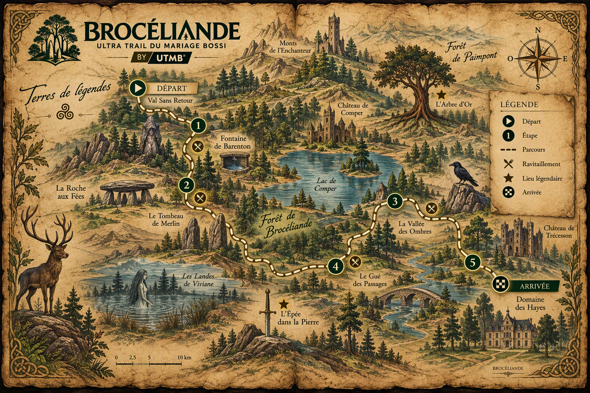

Le Parcours
Choisissez une étape : la carte et la liste restent synchronisées.
Le déroulé du week-end, consigné dans le carnet de route.
Choisissez une étape : la carte et la liste restent synchronisées.

Touchez une pastille pour mettre l’étape en évidence dans la liste.